Etel Adnan est une poète syro-franco-américano-libanaise, écrivaine et artiste visuelle qui a ainsi travaillé à la fois le visuel et le textuel. L’édition tente, à travers le dispositif de scans, de mettre en lien ces deux pratiques et ainsi créer un regard nouveau sur son œuvre.
L’édition rassemble la série de dessins à l’encre ainsi que des passages de poèmes et de livres issus de Parler aux fleurs, Ecrire dans une Langue Étrangère, Voyage, guerre, exil, Insomnia, Grandir au Liban et Dans la forêt.
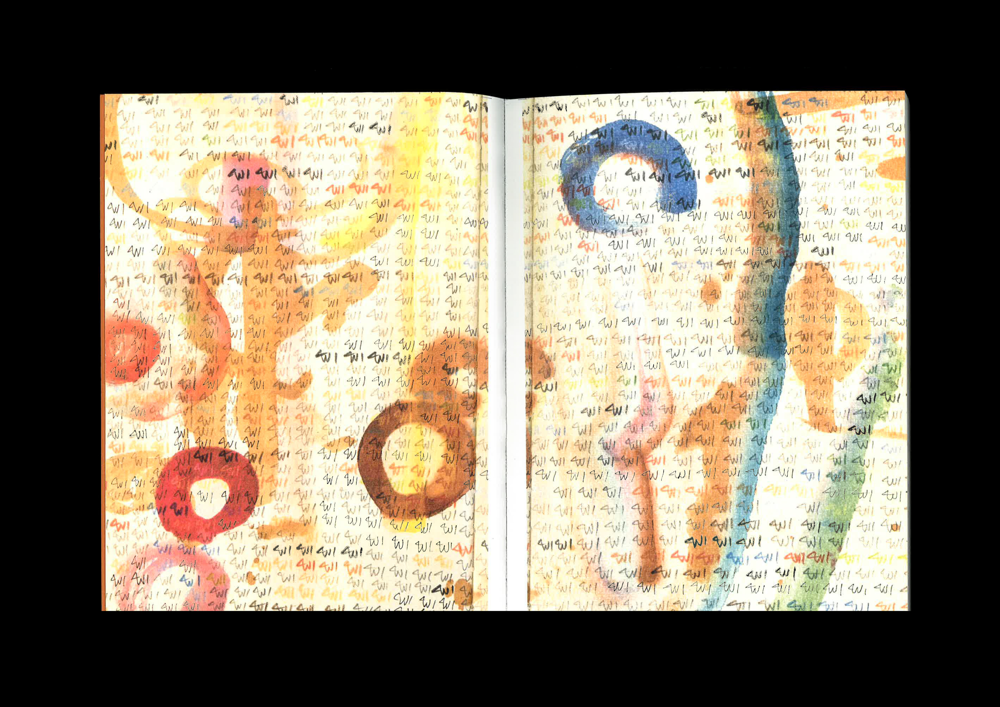 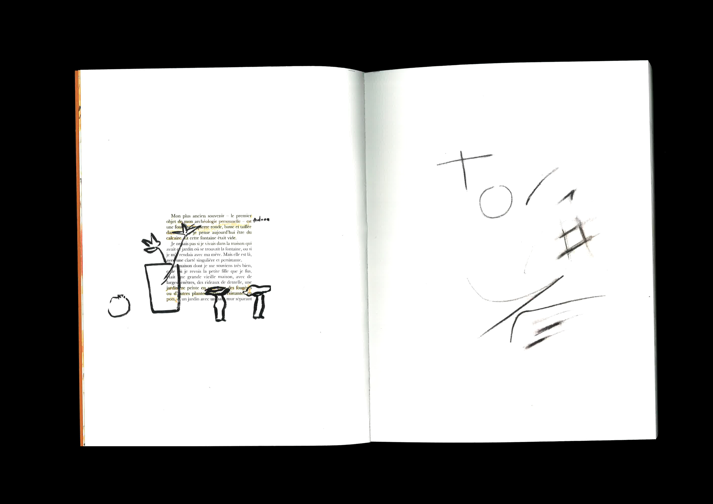 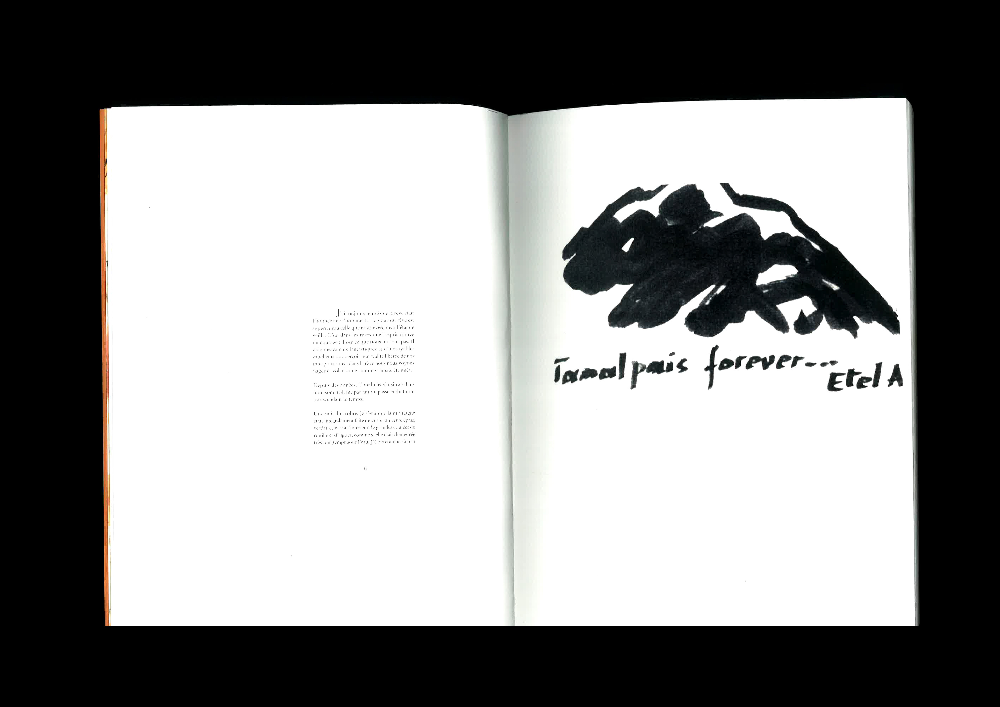 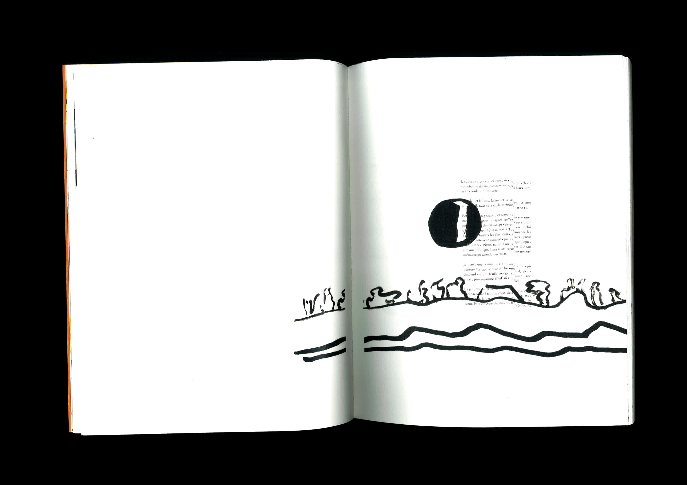 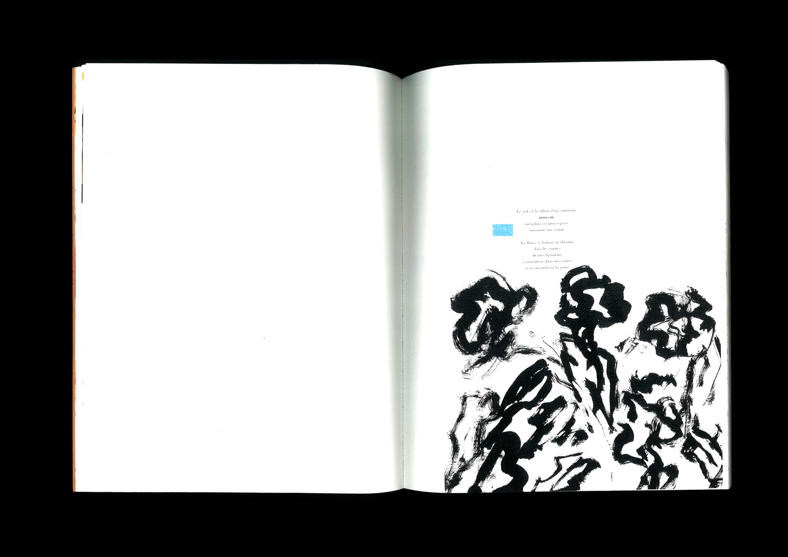 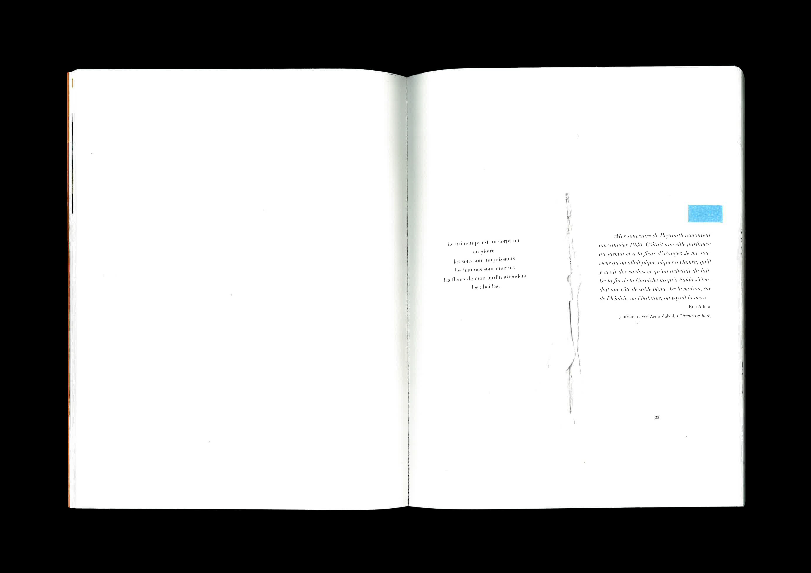 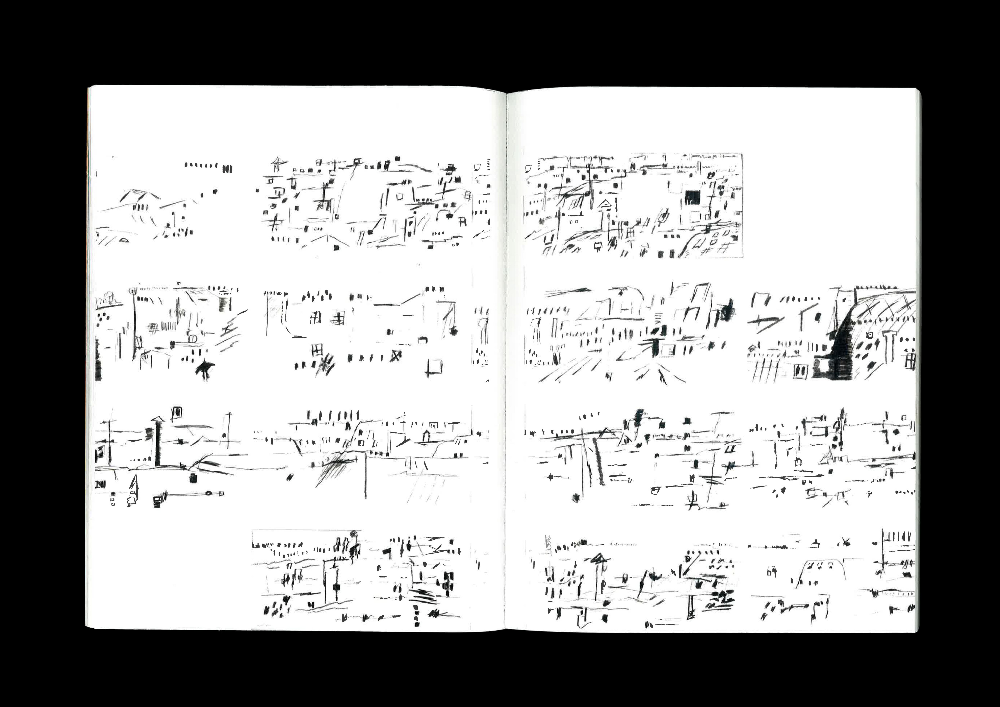 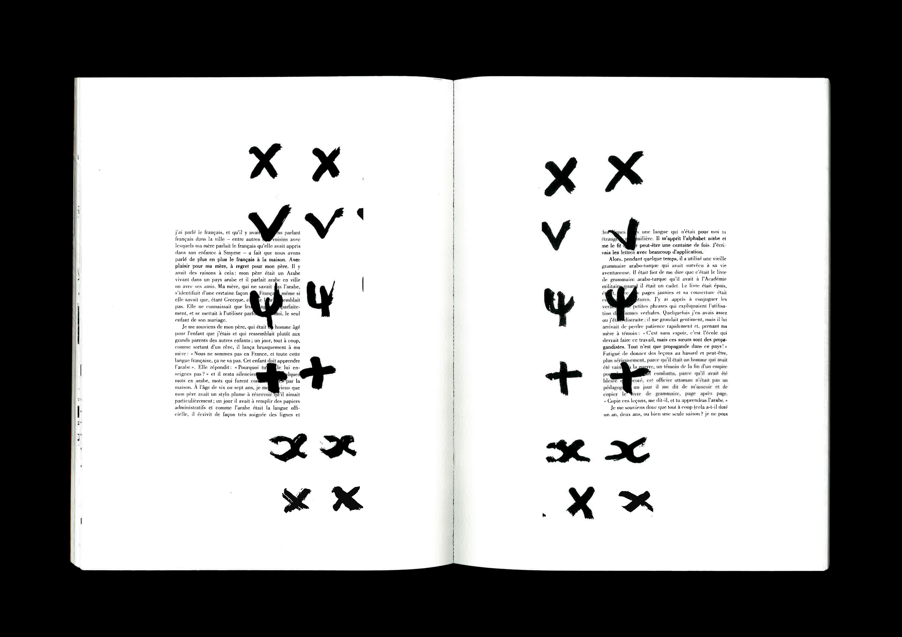 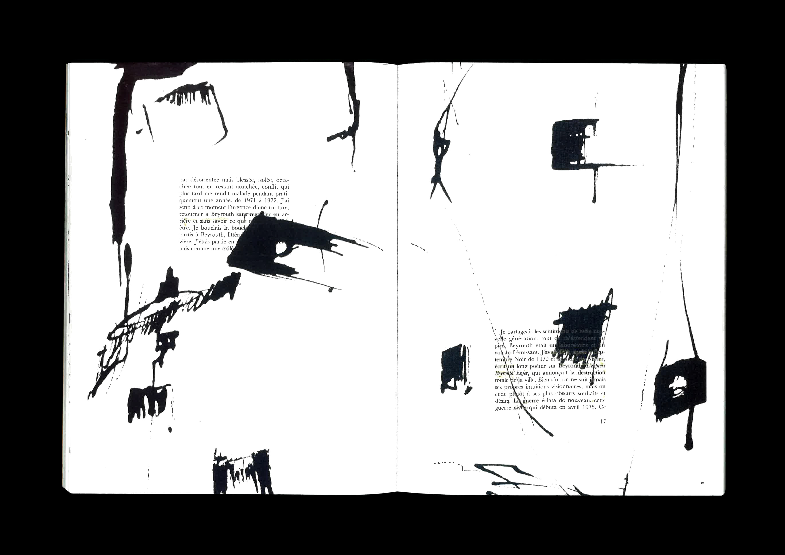 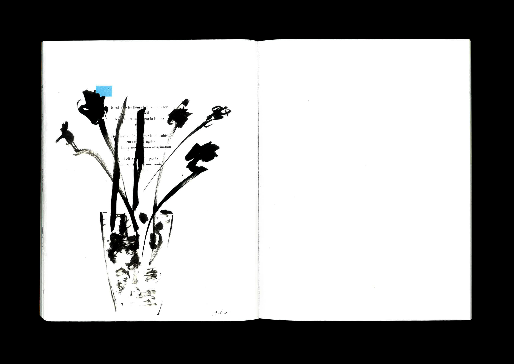 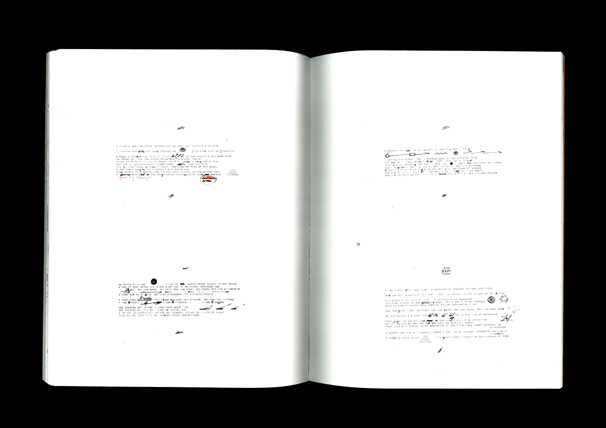